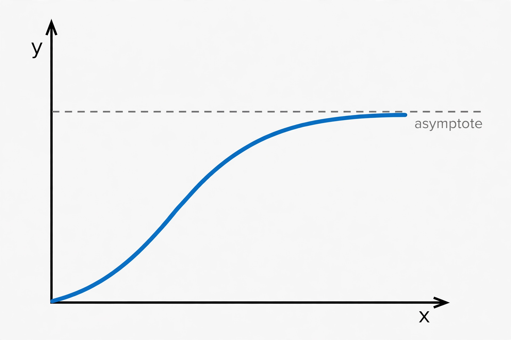

Limit (mathematics)

[Image: A curve approaching a horizontal dashed line it never quite reaches]
In mathematics, a limit is the value that a function (or sequence) approaches as its input approaches some value. Limits are the foundation of calculus: both the derivative and the integral are defined as limits.
The rigorous epsilon–delta definition was given by Bernard Bolzano in 1817 and developed by Augustin-Louis Cauchy and Karl Weierstrass in the 19th century, replacing the vague infinitesimals of Newton and Leibniz with precise inequalities.
Sequences and functions
A sequence such as 1, 1/2, 1/3, … has limit 0: its terms eventually stay within any chosen distance of 0. A function has a limit at a point when its values approach that limit from both sides, whether or not the function is defined at the point itself.
Limits can also be infinite, or fail to exist — as for a function oscillating ever faster near a point — and detecting the difference is a core skill of analysis.